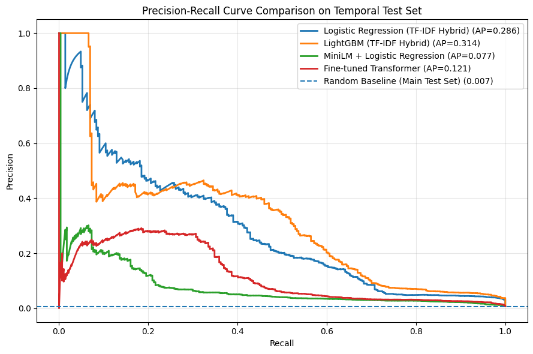
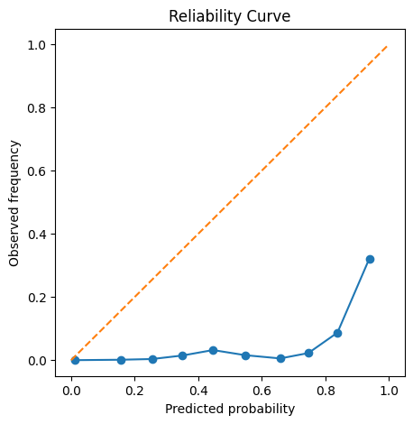
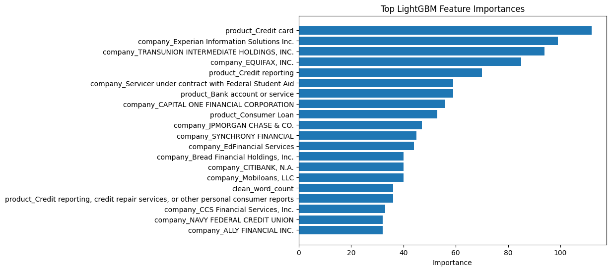
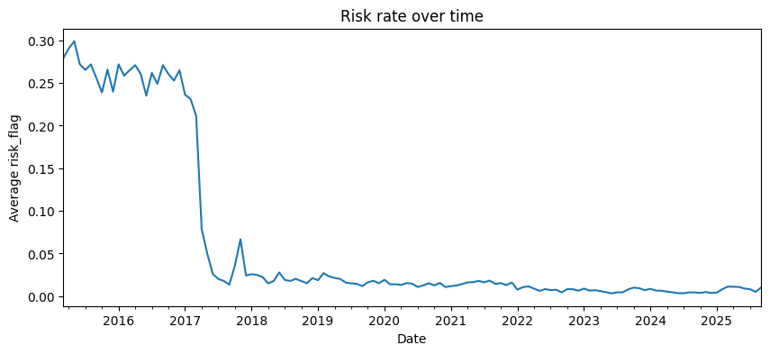

Flagging complaints headed for disputes or delays
Five models trained on 639,149 CFPB complaints, tested on the months after.
| Model | PR-AUC as a bar | PR-AUC | AUROC |
|---|---|---|---|
| LightGBMTF-IDF, product, company and state | 0.314 | 0.966 | |
| Logistic regressionSame features | 0.286 | 0.955 | |
| Fine-tuned transformerBalanced subsample | 0.121 | 0.905 | |
| MiniLM + logistic regressionSentence embeddings | 0.077 | 0.874 | |
| MiniLM + LightGBMSentence embeddings | 0.067 | 0.880 | |
| ChanceThe share flagged in the test months | 0.007 | 0.500 |
Simpler features beat bigger models
TF-IDF word features plus product, company and state reached 0.314. A fine-tuned transformer reached 0.121.

Raw scores overstate the risk
Complaints scored near 0.9 were positive about a third of the time. Isotonic calibration cut the Brier score from 0.068 to 0.006.

It leans on company names
The strongest features are the product and the company, such as Experian, TransUnion and Equifax. Trained on credit reporting and tested on debt collection, PR-AUC fell to 0.124.

The label shifted in 2017
A complaint counts as risky if the consumer disputed the response or it came late. The CFPB stopped taking disputes on April 24, 2017, and the flagged share fell from about 25% to 2%.

What this can’t tell you
The label is a proxy
It marks disputes and late responses, not fraud or default.
It uses one shard
Every fifth row: 679,808 complaints with a narrative.
The narratives are gone
The CFPB removed them in September 2026, so a rerun needs a saved export.
Run the notebook
- Written for Google Colab
- An export running to 2025-10-15
- Split by date on 2025-07-01
- F2-best threshold 0.80, F2 0.39
# install the dependencies pip install -r requirements.txt # in the first cell, point at your saved export DATA_PATH = Path("/content/drive/MyDrive/complaints.csv") # outside Colab, drop the drive.mount line and use a local path